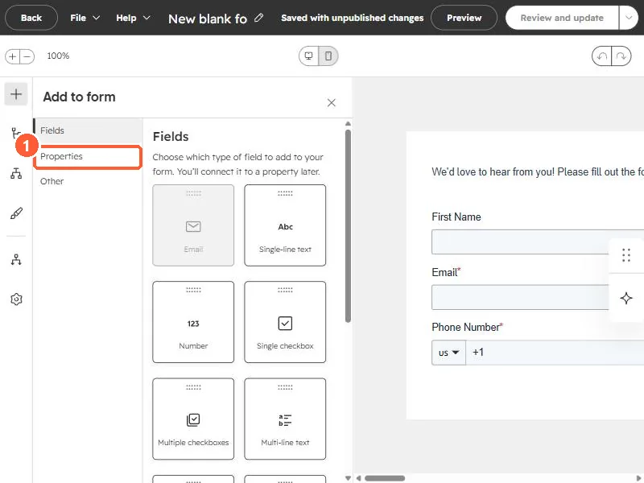

Short answer
HubSpot's KB: hidden form fields set property values without visitors typing them, and can capture URL parameters such as UTM values (for example utm_campaign) into contact properties on submission. A required field can't be hidden. If Pre-populate fields for returning visitors is on, the hidden value may be overwritten depending on field type.
1. Fields and properties
The Add to form panel in my demo portal, with a Properties tab for existing properties.


2. Remember
- HubSpot's own source properties already record traffic source; UTM fields add your own detail.
- Use consistent UTM values. See tracking URLs.